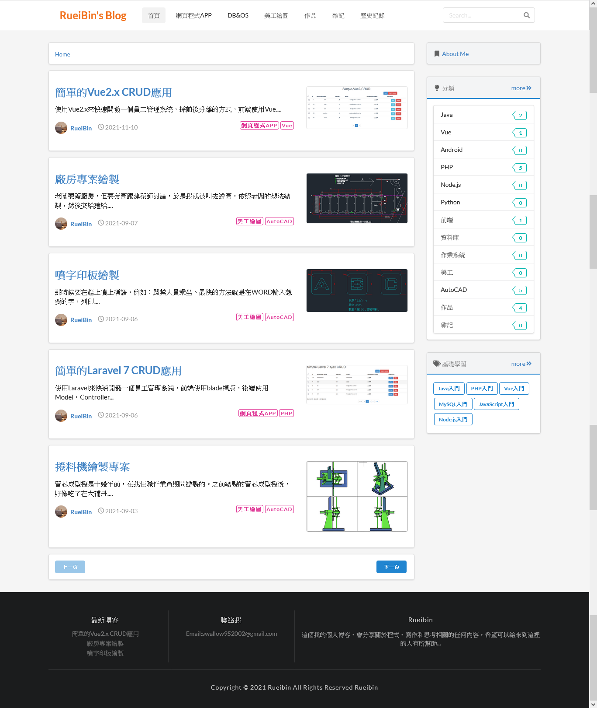
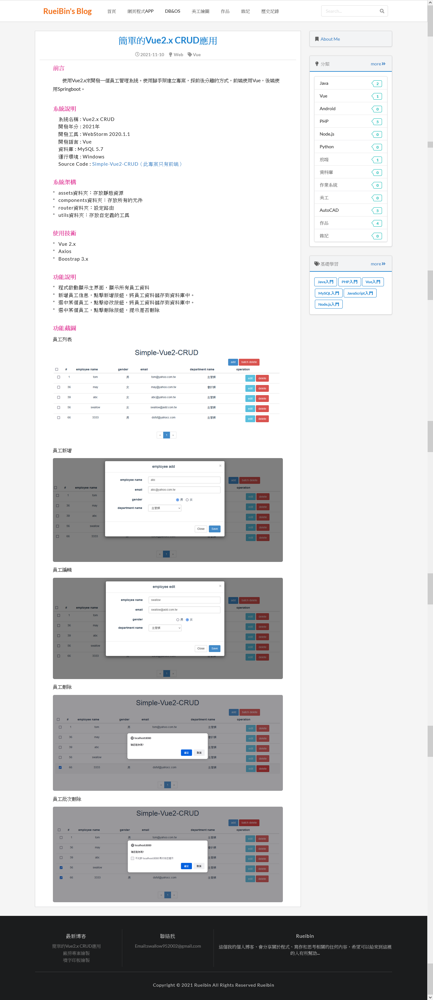

使用Semantic-ui來建置個人Blog網站，這個網站是靜態網站，沒有使用到後端程式與資料庫，因為放在GitHub上面，只有使用Html+JS+jQuery，不過，這樣也就夠了。
一個網站中有很多共用的資料，依本專案的網頁舉例，如：導覽列，分類，基礎學習，頁尾等，每次新增網頁或者修改共同的資料，就要修改全部的網頁，這樣維護很花時間成本。
所以，本專案只有用一個js檔案來維護全部網頁，而網頁是沒有寫任何的資料內容，只有layout而已。
首頁

內頁
